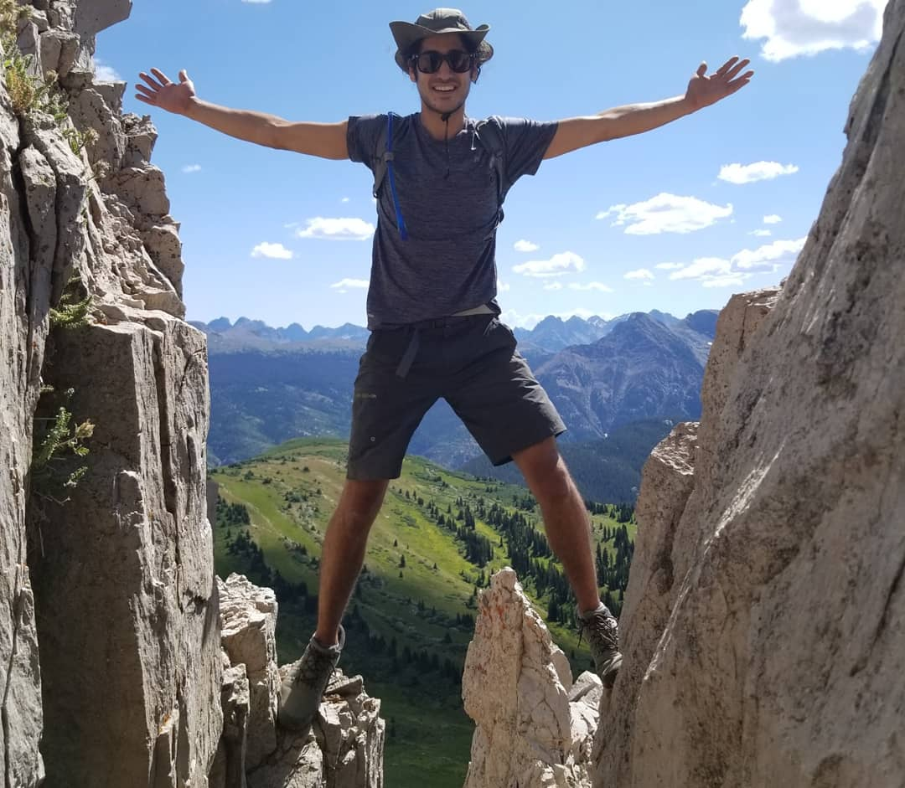

"The sixth sick Sheik's sixth sheep's sick." - Hardest sentence for native English speakers to pronounce, according to MIT
Biography:
Born and raised in Israel, Hagay immigrated to the US in 2002 at the age of 9. A life long tinkerer, he has been taking things apart to study their inner workings from a young age.
Skills:
- Programming Languages
- JavaScript
- HTML
- CSS
- Programs Known
- GitHub
- Visual Studio Code
- Linux
- Logic & Ableton DAWs
- Other Skills
- Juggling
- Music Composition
- Making Pizza
- Petting Dog
- Bushcraft

Education:
- Randolph College:
- BA in Environmental Science, minors in Biology and Philosophy
- 3.9 GPA, Phi Beta Kappa, Summa Cum Laude, Sigma Xi
- Flatiron School
- Software Engineering Immersive
- Continuing Education
- California Qualified Applicators Licence
- OSHA 40-hour HAZWOPER Certification
- FreeCodeCamp Responsive Web Design Certification
- FreeCodeCamp JavaScript Algorithms and Data Structures